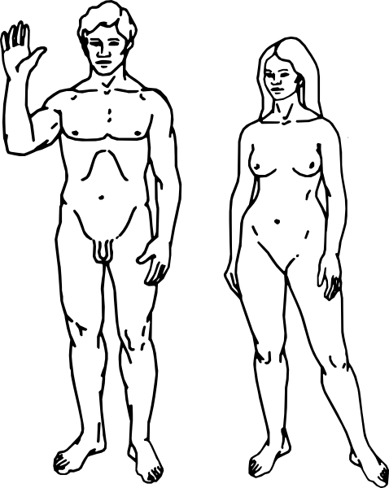

|

|
Micro Climate SpiralWheel Radius: red line Pipe Diameter: blue lines Pipe Diameter should be the "inside" of the pipe (not including the material of the pipe itself). Weight Considerations1 liter of water = 1 kilogram The weight of the pipe itself must also not be forgotten (Ask the supplier for the total weight of 1 meter of pipe, and multiply that by the Pipe Length) Weight of an average car: 1,500 kilograms |